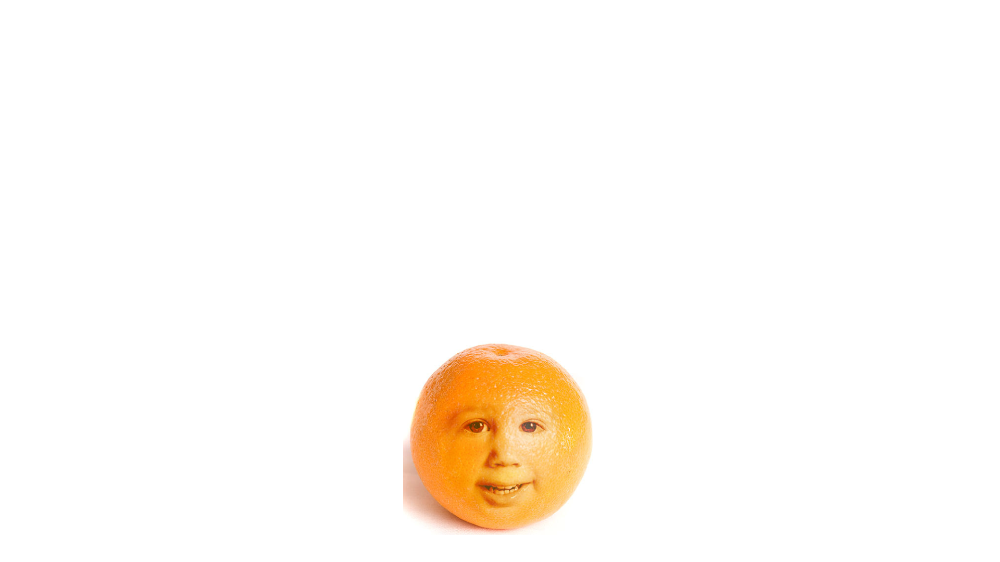

Tente utilizar fotos que estejam em
condições de iluminação semelhantes, por
exemplo ambas com iluminação lateral, luz
natural, luz artificial, etc.
Na laranja, a fonte de luz está à direita e o mesmo para o menino.
Se fosse necessário podíamos virar a laranja horizontalmente para que
a luz viesse da mesma direção em ambas as imagens.
Use sua ferramenta laço para selecionar e copiar (CMD-C no MAC e
CTRL-C no PC) a parte do rosto da pessoa e colar (CMD-V no MAC e
CTRL-V no PC), na laranja. Isso criará uma nova camada.
Reduza a opacidade da camada de rosto para que você possa ver a
laranja através dela - diminua para cerca de 70%.
Em seguida, você pode mover e redimensionar o rosto até que ele
alinhe corretamente na laranja.
Volte a aumentar a opacidade para 100% e use uma borracha macia
para apagar os limites em excesso da cara.

Agora duplique a camada do rosto. Arraste
para o ícone de nova camada.
E oculte a original clicando no ícone do olho na
camada. Trabalhe na cópia.
O próximo passo varia dependendo da
imagem, mas sempre a utilizar as ferramentas
de ajuste.
Dê algum contraste com Brilho/Contraste,
Níveis ou Curvas. (IR PARA IMAGEM>
AJUSTES> Para encontrar NÍVEIS ou CURVAS)
Agora vá a Imagem> Ajustes> Variações e dê um pouco de cor até
parecer que a face coincide com a fruta, etc.
E em Balanço de cores (> IMAGEM> AJUSTES> BALANÇO DE COR para
acertar.
Agora vamos brincar um bocadinho com a imagem. Primeiro, diminua a
opacidade do rosto para cerca de 60% para ver o padrão da casca da
fruta a aparecer.
Perde-se alguma definição nas sombras ao redor do nariz, etc. e é preciso
aumentar o contraste no rosto novamente, até que a definição volte.
Comece a apagar ao longo das bochechas, cana do nariz, etc., para deixar
transparecer a pele na fruta. Se perceber que a fruta é mais escura do
que o local apagado, use a ferramenta DOGDE na fruta para
corresponder aos destaques apagados (isso cria contornos na casca real
da fruta.) Se a pele da fruta estiver mais clara do que deveria ser use a
ferramenta BURN.
<<<<< Use uma borracha macia com
baixa opacidade (cerca de 20%)

Na camada da fruta queime (BURN) as sombras. Abuse - isto ajuda todos
os pequenos poros e texturas a aparecerem melhor na camada do rosto.
Continue até parecer natural.
Comece agora a mexer na opacidade do rosto, trabalhando na fruta e
apagando um pouco mais no rosto, etc, até que comece a parecer
natural.
Volte à camada do rosto e queime as sombras dos olhos, nariz e boca
para que elas estejam "lá" o suficiente - especialmente os olhos.
Na camada da fruta queime (BURN) as sombras. Abuse - isto ajuda todos
os pequenos poros e texturas a aparecerem melhor na camada do rosto.
Continue até parecer natural.
Comece agora a mexer na opacidade do rosto, trabalhando na fruta e
apagando um pouco mais no rosto, etc, até que comece a parecer
natural.
Volte à camada do rosto e queime as sombras dos olhos, nariz e boca
para que elas estejam "lá" o suficiente - especialmente os olhos.
>>>>>
Duplique (CMD CLICK no MAC / CTRL CLICK no PC) a
camada da fruta e faça um MERGE (menu dos
LAYERS) com sua camada de rosto.
Lembra-se da versão colorida da camada original do
rosto que tornou invisível? Torne-o visível e arraste-o
para baixo da nova camada de rosto com fruta.
Aumente o Zoom e use a borracha com 100% de
opacidade, usando vários pincéis, para apagar o
interior da boca e dos olhos, para que a versão
colorida fique visível através da nova camada.